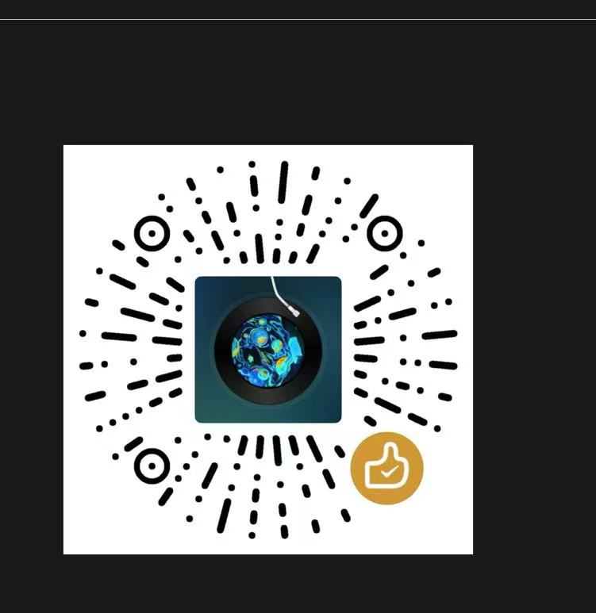

从零到金牌选手 · 系统掌握 C++ 与算法竞赛知识 · 免费·开源·随时随地学习
按阶段规划，循序渐进。点击章节可标记已完成。
核心语法、STL、输入输出——信奥赛必备基础。
信奥赛高频考点，从排序到动态规划，一网打尽。
写代码并实时运行（模拟输出展示参考结果）。适合快速测试想法。
选择题、填空题，检验你的掌握程度。
历年真题精选，点击展开题目详情与解题思路。
你的学习记录保存在本地浏览器中，不会丢失。
总体完成度
如果这个网站对你有帮助，可以请小猫喝杯咖啡 🐱

扫码赞赏 · 支持信奥赛学习 💪